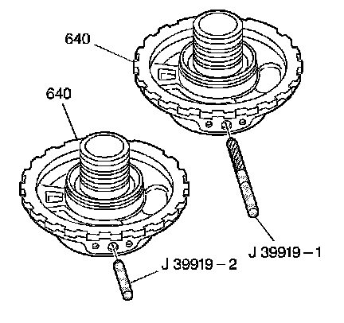

Center Support Assembly Reconditioning Repair
Center Support Assembly Reconditioning Repair
Tools Required
^ J 39919-1 Center Support Thread Reamer
^ J 39919-2 Center Support Pin Gage

Notice: You may recondition the original center support assembly one time only. You must use the new, larger, service bolt with the reconditioned center support assembly in order to avoid component damage. The service bolt is yellow in color, and the production bolt is black in color.
Perform one of the following steps:
^ If the center support assembly has been previously reconditioned, or if the J 39919-2 fits into the bolt hole, you MUST replace the center support assembly and bolt.
^ If the center support has never been previously reconditioned:
1. Insert the J 39919-2 into the center support assembly bolt hole. If the J 39919-2 does NOT fit into the center support bolt hole, you can recondition the center support assembly for reuse.
2. Ream the center support assembly bolt hole to the proper dimension using the J 39919-1.